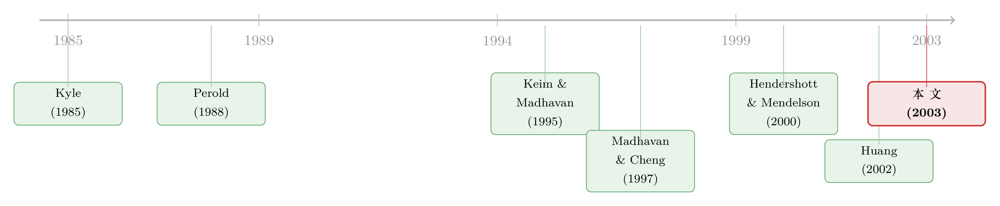

最后一笔交易，落在了谁手里？——机构订单在「另类市场」省下的那几十个基点
本文读的是 Conrad, Johnson & Wahal (2003, Journal of Financial Economics)：他们拿到一份覆盖 797,068 笔机构订单、2.15 百万笔成交、约 $1.6 万亿交易额的专有数据，第一次把机构投资者在交叉系统 (crossing systems) 与 电子通讯网络 (electronic communication networks, ECNs) 上的成交单独拎出来核账，发现——在控制了订单与证券特征、甚至控制了选择交易场所的内生性之后——这些「另类交易系统 (alternative trading systems)」上的已实现执行成本，普遍比传统券商低；而 1997 年的订单处理规则与最小报价单位 (tick size) 改革，又把 ECN 的成本优势削掉了一截。
1 一个看不见的市场
先说一个让人有点不舒服的事实。
当一家共同基金决定买进一千万股某只股票时，真正困难的从来不是「按哪个键」，而是怎样把这笔单子塞进市场而不把价格自己顶上去。买的人一多，价格就涨；等你买完，账面上已经先亏了一截。这部分「因为我自己在交易而付出的代价」，学界叫它市场冲击 (market impact)，是机构执行成本里最大、也最难量的一块。
过去几十年，研究者衡量这种成本，靠的都是公开数据——TAQ 这样的成交与报价库，告诉你每一笔成交的价、量、时间。可问题在于：到了 1990 年代后期，越来越多的机构订单，根本就不在这些公开数据里成交了。它们溜进了一类专有的、电子化的、彼此看不见对方名字的交易场所。
这就是本文的张力所在。论文开篇给了一个数字：到 2000 年，当时在运营的九家 ECN，已经占了 Nasdaq 证券美元成交额的近 40%（SEC, 2000）；而最有名的交叉系统 POSIT，1988 到 1999 年间成交量的复合年增长率超过 45%，到 1999 年单年成交了 65 亿股。一个体量如此庞大的市场，却因为「数据是专有的」，在学术上几乎是一片黑箱。
所谓「另类」，对照的是传统的券商系统。一笔机构单子，要么交给券商（broker）去人肉撮合、甚至动用自有资本，要么扔进交叉系统等着被匿名配对，要么挂到 ECN 上和别的机构、做市商、交易所专家匿名议价。三种方式，对「即时性 (immediacy)」「匿名性」「价格发现」的取舍完全不同。
于是一个最朴素的问题浮出来：这些新场所，到底是更便宜，还是只是看起来更便宜？
2 三种「卖法」，与一个基准
要回答这个问题，先得把机构是怎么交易的讲清楚。本文的第一个贡献，恰恰是分类——它把一笔订单（order）和构成这笔订单的若干笔成交（trade）拆开来看。
一笔订单，如果它所有的成交都落在同一类场所，叫单机制订单 (single mechanism order)；如果横跨多类，叫多机制订单 (multiple mechanism order)。在 797,068 笔订单里，约 90%（723,998 笔）是单机制订单。这些单机制订单又被切成四类，你可以把它们想成一条「营销订单有多卖力」的连续谱：
- 日内交叉 (day cross)：在交易时段内，于 ITG 的 POSIT 上按主市场当时的报价中点匿名配对。
108,111笔。 - 盘后交叉 (after-hours cross)：在 Instinet 的盘后交叉网络上，按收盘价撮合。只有
4,048笔——样本太小，作者全程提醒它的统计精度有限。 - ECN：本文里几乎全部是 Instinet 的「日间系统」，机构在屏幕上匿名挂单、和对手议价，有价格发现。
51,127笔。 - 券商成交 (broker-filled)：传统的 NYSE / Amex / Nasdaq 券商系统。券商最积极地提供即时性，主动满世界找对手盘，甚至动用自有资本。
560,712笔——这是绝对的大头，也是全文检验的基准 (numeraire)。
这条谱的逻辑很顺：交叉系统不提供价格发现，它只是把买卖盘匿名地兜在一个池子里配对，所以它对「现在就要成交」要求低的订单更友好；ECN 提供主动的价格发现，在主市场本身比较分散、买卖价差大的时候特别有用——这正是为什么交叉大多发生在 NYSE 挂牌的股票上，而 ECN 扎堆在 Nasdaq 股票上。这个分工不是巧合：交叉系统需要一个像 NYSE 那样可靠的主市场价格来支撑撮合（Hasbrouck, 1995 提供了 NYSE 价格发现质量的证据），而 ECN 恰好补上了 Nasdaq 那种分散、高价差市场里缺失的价格发现。
数据也佐证了这种分工背后的订单差异：交叉系统和 ECN 经手的订单，平均美元金额都明显小于券商；券商订单更大、被拆成更多笔成交、成交率也更高。换句话说，最难啃的单子，往往还是交给了券商。
接着，一个自然的问题是：既然订单本身就长得不一样，你怎么能直接比较它们的成本？
3 识别策略：怎样才算「公平地」比成本
这是全文真正的方法论核心，值得慢慢说。
衡量成本的尺子，作者用的是 Perold (1988) 提出、经 Keim & Madhavan (1995, 1997) 发扬的执行落差 (implementation shortfall) 法。它的思想极简单：把「纸面组合」（在你做出交易决策那一刻、按当时价格成交的假想组合）和「真实组合」（你实际成交的价格、再加上佣金）之间的差，定义为总执行成本。这把成本干净地拆成两块：
$$ \text{Total execution cost} = \underbrace{\text{Implicit cost}}_{\text{price-related}} + \underbrace{\text{Explicit cost}}_{\text{commissions}} $$
隐性成本来自价格的移动（也就是市场冲击那一块），显性成本就是佣金。这个拆分很重要，因为故事的反转之一就藏在这里。
但光有尺子不够。订单特征千差万别，直接对比四类场所的平均成本毫无意义。作者用了两道互补的控制：
第一道，匹配样本 (matched sample)。 按交易方向（买/卖）、订单指令、订单规模、交易所挂牌地、市值这五个维度，给每一笔另类系统订单配一笔尽可能相似的券商订单来对比。好处是不强加任何线性或函数形式假设——你不需要相信成本和规模是线性关系。
第二道，OLS 回归。 回归的价值在于可以塞进机构固定效应 (institution-specific fixed effects)。为什么这一步关键？因为 Keim & Madhavan (1997) 早就发现，不同机构填单的「打法」天差地别，这种差异会直接体现在它们的执行成本里。控制掉机构固定效应，等于是问「同一家机构，把单子分给不同场所，成本差多少」，估计自然更保守。
然后，但真正关键的一步在于——内生性。
交易者不是随机地把订单扔进某个场所的。一笔他预感「很难做、冲击会很大」的单子，他可能一开始就避开交叉系统、直接找券商。于是「场所选择」和「事后实现的成本」是内生的：你观察到券商订单成本高，可能不是券商贵，而是因为难做的单子才去了券商。
为了拆开这层纠缠，作者上了 Madhavan & Cheng (1997) 的内生转换回归 (endogenous switching regression)：第一阶段是一个 probit，预测交易者会选择哪类场所；这个选择再喂进第二阶段的执行成本回归，从而对选择性 (selectivity) 做出修正。他们还进一步用 Heckman et al. (1997) 的匹配思路，挑出那些在竞争场所间「有共同支撑 (common support)」的订单来重做转换回归。
结果如何？基本结论不变——成本差异依旧存在，有些情形下甚至变大了。
4 主要结果：那几十个基点，是真的
把三道方法的数字摆出来，故事就清楚了。
匹配样本下：日内交叉相对券商，总执行成本低约 30 个基点——对样本里均价的股票，这相当于每股省 13 美分；ECN 相对券商的差更大，达 66 个基点，约合每股 20 美分。
这里是第一个反转：大部分成本差来自成交价格本身，而不是佣金。 交叉系统的佣金确实低（通常一两美分一股），但真正拉开差距的是隐性成本那一块。也就是说，你在另类系统上省下的，主要不是「手续费便宜」，而是「价格没被自己顶起来」。
OLS 回归下（加了机构固定效应，所以更保守）：日内交叉相对券商，买单省 17 bps、卖单省 14 bps；ECN 则是买单 28 bps、卖单 54 bps。固定效应一进来，差额收窄——印证了「不同机构打法不同」这件事确实在数据里。
转换回归修正选择性之后，这些差额依然稳健地存在，而且像前面说的，有时反而走阔。
最后，作者把注意力对准选择性最可能作祟的地方——那些用了多种机制的订单。一个有意思的发现：虽然多数订单的最后一笔成交是在券商手里完成的，但有超过 40% 的订单，最后一笔落在了某个另类系统上。如果一笔单子里最难做的往往是最后那一截，那么这个 40% 就在说一件颇为颠覆的事——做市商（券商）并不总是「最后求助的市场 (market of last resort)」。对这批多机制订单做交易层面的分析，同时控制订单和成交层面的特征后，结论仍然成立：交叉与 ECN 的成交，成本更低。
5 一个绕不开的疑问，与作者的两种解释
读到这里，聪明的读者一定会皱眉：机构投资者负有法定的「最优执行 (best execution)」义务，理论上他们会去成本最低的地方。如果均衡成立，不同场所之间的「超额」成本差应该是零才对。那这几十个基点的持续差异，到底意味着什么？
作者很诚实，给了两条可能的解释，而且分得很清楚。
对 ECN，他们倾向于「失衡 (disequilibrium)」说。 如果是低成本驱动了这些系统的爆炸式增长，那么我们应该看到：竞争、行业结构变化、监管政策，会随时间把成本差抹平。而样本里恰好有两个这样的冲击，都与 ECN 有关：
- 1997 年的订单处理规则，要求做市商把 ECN 上的报价反映进自己的价格，从而削弱了 Nasdaq 与 ECN 之间的市场分割；
- 同年 SEC 强制缩小最小报价单位 (tick size)，把「ECN 能用更细的价格刻度、而交易所不能」这一优势也削掉了。
这两件事之后，样本里机构对 ECN 的相对使用下降了，ECN 总成交量在 tick size 改革后似乎也回落；更关键的是，ECN 的成本优势在每次冲击后都下降了，虽然仍然非零。这正是「失衡正在向均衡收敛」该有的样子。
对交叉系统，他们给了一个不需要失衡的解释。 交叉系统的成本差较小，而它天生是被动的——撮合不成你就成交不了。这里藏着一个测量上的偏误：那些扔进交叉系统、却完全没配对成功的单机制订单，根本不会出现在数据里。所以本文测的是已实现成本，是以「成交了」为条件的。没成交的「机会成本 (opportunity cost)」被系统性地低估了。这个机会成本有多大？Edwards & Wagner (1993) 估计它从大盘股的 16 bps 到小盘股的 220 bps 不等——这个量级，足以解释交叉与券商之间那点成本差。
这是全文最克制、也最值得学的一笔：同样是「成本更低」，ECN 那部分作者敢解读为真实的竞争红利，交叉系统那部分他们却主动提醒「可能是幸存者偏差」。一个把自己结论的边界讲清楚的实证作者，比一个把所有结果都往「显著」上靠的作者，可信得多。
6 数据
把数据单独拎出来说，因为它是这篇论文的命根子。
主数据来自 Plexus Group——一家专门监测机构交易成本的咨询公司。订单层面是事前 (ex ante) 信息：股票代码、市值、买卖方向、做出交易决策的日期、决策日前一天的收盘价、决策日前五天日成交量的几何均值，以及一个指令变量（市价单 / 限价单 / 交叉）。每笔成交则记录股数、成交价、负责的券商 ID、以及佣金（每股几美分）。机构名字被替换成代码，并被 Plexus 映射成三种风格：动量、价值、多元化。
- 观测单位：订单，及其下属的成交。
- 样本期：1996 年第一季度到 1998 年第一季度。
- 样本量：过滤后
797,068笔订单、59家机构、约2.15百万笔成交。 - 过滤：跟随 Keim & Madhavan，剔除价格低于
$1.00的股票、非美国股票，以及指令字段缺失或为「X」的订单（后者顺带剔掉了八家机构）；应 Plexus 要求再剔一家数据可疑的机构。订单数据与 CRSP 的价格、收益匹配。 - 部分检验还用了 Instinet 提供的、与样本期匹配的「日间系统」逐日逐券成交量。
这份数据的稀缺性，正是论文的护城河：它逐笔标注了每笔成交是哪个券商或哪个另类系统执行的，这是 TAQ 永远给不了的。
7 文献脉络
把这篇论文放回它生长的那条线里看，会更有味道。
最上游是两件工具性的奠基工作。一是 Perold (1988) 的执行落差概念，把「决策价」和「成交价」之间的落差正式定义为执行成本；二是 Kyle (1985) 奠定的市场微观结构理论传统，让「信息」「即时性」「价格冲击」有了统一的语言。
接着，Keim & Madhavan (1995, 1997) 把执行落差真正用到机构交易数据上，刻画了机构填单过程的解剖学，并发现投资风格深刻地决定了执行成本——这直接给了本文「为什么要放机构固定效应」的理由。与此并行，Chan & Lakonishok (1995, 1997) 研究了机构交易前后的股价行为、以及 NYSE 与 Nasdaq 的成本对比，Madhavan & Cheng (1997) 则在「楼上 vs 楼下」大宗交易里发展出本文借用的转换回归方法。同一批作者自己的 Conrad, Johnson & Wahal (2001) 关于软美元的研究，则是本数据的「前传」。

然后，电子化交易这条新支流涌了进来。Hendershott & Mendelson (2000) 建了交叉网络与做市商市场竞争的理论模型；Huang (2002) 用报价数据证明 ECN 是重要的价格发现贡献者；Barclay et al. (2002) 发现 ECN 成交的价差更窄；而市场改革本身——Barclay, Christie, Harris, Kandel & Schultz (1999) 记录了 Nasdaq 改革如何压低了交易成本。
但这些研究有一个共同的局限：它们盯的是「某个平台上发生的全部成交」，无法区分单机制和多机制成交，也无法识别一笔成交在原始订单里的次序。最接近本文的是 Domowitz & Steil (1999) 和 Naes & Odegaard (2001)，但它们都只看单一机构。本文所处的位置，正是「第一篇系统分析机构如何策略性地横跨多个交易平台、以最小化执行成本」的研究——它的独特性，全在那份能逐笔归因、又能把订单拆成序列的数据上。
（顺带一提，这条「电子市场 vs 传统市场」的线一直延续到今天。关于交易所自己「关灯」变暗后透明度的代价，可参见《把自家的灯关掉：一个交易所的「黑暗实验」，照出了透明度的价值》；关于电子交易所是否还需要一个「楼上市场」，可参见《电子交易所，还需要一个「楼上」吗？》。）
8 评论与延伸（Q&A + 研究方向）
(a) 几个可能的疑问
Q：既然机构有「最优执行」的法定义务，成本差为零才对，那这几十个基点是不是说明它们没尽责？
不必然。作者给了两种不靠「失职」的解释：对 ECN，是市场尚在向均衡收敛的暂时性失衡（1997 年两次冲击后差额确实在缩）；对交叉系统，是因为没成交的订单不进数据，已实现成本低估了机会成本。把这两块剥掉，剩下的「真实超额差」可能远没有表面那么大。
Q：那 66 bps 的 ECN 优势，可信吗？会不会全是选择性偏误？
这正是转换回归要回答的。用 probit 预测场所选择、再修正第二阶段成本后，差额非但没消失，有时反而走阔；机构固定效应进来后收窄但仍在。三道方法（匹配、OLS、转换回归）指向同一方向，是这篇论文最有底气的地方。
Q：交叉系统的成本优势和 ECN 的，能等量齐观吗？
不能，作者自己也不这么看。ECN 的优势他们解读为可被竞争和监管侵蚀的真实红利；交叉系统的优势则很可能是「幸存者偏差」——失败的撮合根本不在样本里。Edwards & Wagner (1993) 给的
16–220bps 机会成本，量级足以吞掉交叉的那点优势。
Q：「超过 40% 的订单最后一笔在另类系统成交」为什么算重要发现？
因为它挑战了「做市商是最后求助的市场」这一长期假设。如果一笔单子最难的是收尾那一截，而四成订单把收尾交给了被动的交叉系统或匿名的 ECN，说明机构对另类系统的信任，已经深入到了最棘手的环节。
Q：1997 年的两个冲击（订单处理规则、缩小 tick size），怎么知道是它们、而不是别的趋势压低了 ECN 优势？
这是识别上最弱的一环。作者依赖的是「冲击发生前后」的时序对比，而非一个干净的对照组。同期还有 ECN 数量增加、行业结构变化等并行趋势，很难把功劳唯一地归给这两条规则——作者的措辞也确实是「appear to have reduced」，留了余地。
Q：这份 1996–1998 的数据，对今天还有意义吗？
方法论的意义大于具体数字。今天的暗池、ECN 早已不是当年模样，但「逐笔归因 + 拆订单序列 + 修正场所选择内生性」这套做法，是后续所有机构执行成本研究的模板。具体的
30/66bps 是时代的快照，框架才是遗产。
(b) 几个可能的研究问题与提案
1. 把同一框架搬到公司债市场 - 【经济故事】本文的全部洞见都建立在「订单可以被拆成跨场所的序列、且每笔成交可归因」之上。公司债市场近十年正经历类似的电子化（RFQ 平台、全或无、做市商网络），但流动性极度分散、成交稀疏，机构如何在「叫价系统 vs 直接找交易商」之间分配一笔大单，几乎是空白。 - 【可行性】中。需要类似 Plexus 的机构订单级数据（如某资管的内部 OMS 记录）配 TRACE 成交。识别可沿用本文的转换回归。难点是公司债成交太稀，匹配样本难做、机会成本（未成交）更严重——但这恰恰让「幸存者偏差」这一主题更有研究价值。（流动性测量上的相关讨论，可参见《把「成交价」从「成交量」里解放出来——重新丈量公司债的流动性》。）
2. 外资机构是否在另类系统上「被收了更高的过路费」？ - 【经济故事】本文把机构当作同质的成本最小化者，但不同机构打法不同（这也是放固定效应的理由）。一个自然的延伸：本土 vs 外资机构，在匿名的 ECN / 暗池上的执行成本是否系统性不同？若外资因信息劣势或时区错配而更依赖被动撮合，它们可能承担更高的机会成本。 - 【可行性】中低。需要带机构国籍标签的订单级数据，现实中很难拿到。可退而求其次，用某个新兴市场交易所的会员席位（区分境内外）做近似。
3. 监管冲击作为干净的自然实验 - 【经济故事】本文对 1997 年两个冲击的识别偏弱（仅时序对比）。但 ECN 和暗池领域此后有大量分阶段实施的监管（Reg ATS、Reg NMS、MiFID II 的暗池容量上限），天然适合做交错双重差分。 - 【可行性】高。监管实施日期是公开的、分券种/分市场错开的；执行成本数据在 TRACE / 交易所层面可得。识别上需警惕交错 DiD 的已知陷阱（关于这一点，可参见《当「更稳健」的设计悄悄把符号弄反了——重读交错双重差分》）。
4. 把「未成交」显式建模进去 - 【经济故事】本文最诚实的局限，是交叉系统里失败的撮合不进数据。若能拿到包含未成交挂单的完整订单簿，就能直接估计机会成本，而不必借 Edwards & Wagner (1993) 的外部数字。这会把「另类系统到底便不便宜」从「条件于成交」推进到「无条件」的答案。 - 【可行性】中。需要单一交叉系统/暗池的全量挂单数据（成交 + 未成交）。这类数据稀缺但并非不存在，关键是说服平台方开放。
9 我的判断
先说贡献。这篇论文的价值，九成在数据，一成在它对数据的克制。在一个因为「专有」而无法被 TAQ 看见的市场里，它第一次把机构订单逐笔归因、拆成跨场所的序列，并用三种互不依赖的方法（匹配样本、带机构固定效应的 OLS、修正选择性的转换回归）一致地证明：另类系统上的已实现执行成本更低。更难得的是，它没有把这个结论一锤定音地包装成「另类系统更优」，而是老老实实地区分了 ECN（可能是真实的、会被竞争侵蚀的红利）和交叉系统（很可能是幸存者偏差），并指出 1997 年的监管与 tick size 改革如何同步削掉了 ECN 的优势。这种「先把结论的边界画清楚」的写法，是实证微观结构里教科书级别的示范。
再说对识别的担忧。最弱的一环是 1997 年那两个冲击的因果解读——纯时序对比，没有干净的对照组，同期又有 ECN 数量激增等并行趋势，作者用「appear to」措辞是合适的，但读者不该把它当成因果。其次，转换回归的可信度，最终系于第一阶段 probit 里排除性约束的合理性——什么变量只影响场所选择、却不直接进入成本方程？论文（在截断的篇幅里）对这一点的论证，是我最想看到更多细节的地方。第三，「以成交为条件」这件事，对交叉系统的偏误是结构性的，作者诚实地承认了，但也意味着「交叉系统更便宜」这个具体结论，几乎不可能从本文数据里被无偏地证实。
最后，我想看到的后续。一是把这套框架搬进今天的市场——暗池、ECN、做市商网络早已迭代了几轮，但「拆订单序列 + 修正场所选择」的方法论应当历久弥新；二是拿到包含未成交挂单的数据，把机会成本从外部借来的数字，变成内生估计出来的量。那一天，我们才算真正回答了这篇论文二十多年前抛出的问题：另类市场的便宜，到底有几分是真的。
参考文献
- Barclay, M., Christie, W., Harris, J., Kandel, E., Schultz, P. (1999). Effects of market reform on the trading costs and depths of Nasdaq stocks. Journal of Finance 54, 1–34.
- Barclay, M., Hendershott, T., McCormick, T. (2002). Information and trading on electronic communication networks. Working paper, University of Rochester.
- Chan, L., Lakonishok, J. (1995). The behavior of stock prices around institutional trades. Journal of Finance 50, 1147–1174.
- Chan, L., Lakonishok, J. (1997). Institutional equity trading costs: NYSE versus Nasdaq. Journal of Finance 52, 713–735.
- Conrad, J., Johnson, K., Wahal, S. (2001). Institutional trading and soft dollars. Journal of Finance 56, 397–416.
- Conrad, J., Johnson, K., Wahal, S. (2003). Institutional trading and alternative trading systems. Journal of Financial Economics 70(1), 99–134.
- Domowitz, I., Steil, B. (1999). Automation, trading costs, and the structure of the trading services industry. Brookings-Wharton Papers on Financial Services.
- Edwards, M., Wagner, W. (1993). Best execution. Financial Analysts Journal 49, 65–71.
- Hasbrouck, J. (1995). One security, many markets: determining the contributions to price discovery. Journal of Finance 50, 1175–1199.
- Heckman, J., Ichimura, H., Todd, P. (1997). Matching as an econometric evaluation estimator: evidence from evaluating a job training programme. Review of Economic Studies 64, 605–654.
- Hendershott, T., Mendelson, H. (2000). Crossing networks and dealer markets: competition and performance. Journal of Finance 55, 2071–2116.
- Huang, R. (2002). The quality of ECN and Nasdaq market maker quotes. Journal of Finance 57, 1285–1319.
- Keim, D., Madhavan, A. (1995). Anatomy of the trading process: empirical evidence on the behavior of institutional traders. Journal of Financial Economics 37, 371–398.
- Keim, D., Madhavan, A. (1997). Execution costs and investment style: an inter-exchange analysis of institutional equity trades. Journal of Financial Economics 46, 265–292.
- Kyle, A. (1985). Continuous auctions and insider trading. Econometrica 53, 1315–1335.
- Madhavan, A., Cheng, M. (1997). In search of liquidity: block trades in the upstairs and downstairs markets. Review of Financial Studies 10, 175–203.
- Naes, R., Odegaard, B.A. (2001). Equity trading by institutional investors: to cross or not to cross? Working paper, Norwegian School of Management.
- Perold, A. (1988). The implementation shortfall: paper versus reality. Journal of Portfolio Management 14, 4–9.